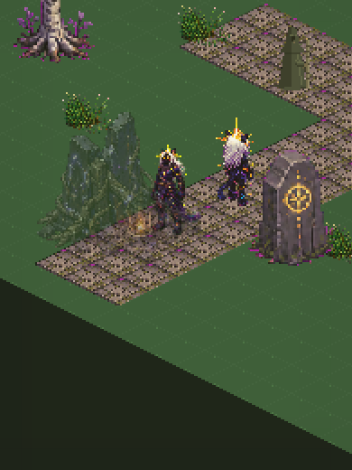
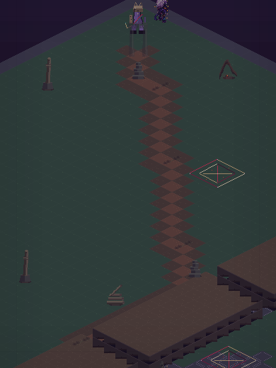

What it is
Three things, one continuous place.
Most apps make you choose between a tool, a course, and a game. This is one experience where the studying, the companion and the world are the same system — what you learn in one room changes what you can do in the others.
Someone who remembers
A companion that holds the thread of what you're working through, in your words, across sessions. It names itself as AI. It doesn't pretend to be a person, and it doesn't pretend to be certain when it isn't.
Live
Doors that go somewhere
Fifty-plus domains — hermeticism, astronomy, herbalism, cognitive science, mythology, shadow work — each carrying its actual sources rather than a summary of a summary. The School counts its own size from the registry, so the number on this page can't go stale.
Live
Somewhere to walk
An authored isometric world with regions, encounters, a companion that follows you, and consequences that return to the School. Built on our own in-repository engine, where content is data and the same schemas drive the editor.
Foundation
The world
We stopped describing it.
Here it is.
These are rendered straight from the engine's own draw list — the same regions, tiles, props and lighting the game composes at runtime. Not concept art, not a mockup made for this page.


Rendered by the project's own scene compositor from the live content registry. The world is authored as data — regions, encounters and creatures are typed content compiled from source maps, so the same definitions drive both the game and the editor Mac builds them in. Frame pacing and feel on a physical phone are judged by a person holding the device, never by a passing test.
The working
The intelligence isn't hidden
behind a spinner.
Most apps hide the machine and hope you don't ask. We'd rather show the path a question takes — where it goes, what it costs, what came back, and what was grounded in the School's own material versus what the model produced on its own.
You ask
A question, in your own words, from wherever you are in the app.
The School answers first
Your question is grounded against the domain material before a model ever sees it.
Routed
Sent to whichever model fits the task, through one broker with one contract.
Reasoned
The model works. Deterministic parts of the app — the world, the charts — never make this trip at all.
Received
The answer returns with its receipt: what grounded it, what it cost, how long it took.
Shown
You see the answer and the receipt together. Refusals and failures are visible, not swallowed.
Register: the broker, the routing and the grounding are live. The visible receipt surface described in steps 05–06 is under active build — the honest-receipt pattern already ships elsewhere in the app and is being carried to the conversation. Marked ◐ Foundation in the ledger below rather than claimed as finished.
The School
Eight wings.
Six hundred–odd doors.
The School is the gravitational centre. Every domain carries its real sources, its own vocabulary, and a way in that doesn't require you to already know the language. You don't have to start at the beginning — there isn't one.
The Hermetic Wing
Correspondence, alchemy, the emerald doctrine, and the long argument about mind and matter.
The Celestial Wing
Astronomy, the natal architecture, real ephemeris computation, and the sky as people have actually read it.
The Terrestrial Wing
Herbalism, mineral lore, the body, and the disciplines that keep their feet on the ground.
The Mythic Wing
Living pantheons — Celtic, Tianxia, and others — held as traditions with their own internal logic.
The Psyche Wing
Cognitive science, shadow work, and the study of what a mind does when it looks at itself.
The Formal Wing
Mathematics, logic, systems, and the structures the rest of the School borrows to think with.
The Commons
A walkable heart with keepers, reliquaries and celestial instruments, and a first trial that plays end to end.
The Deeper Wings
Connected and reachable, awaiting their fuller curriculum builds. Named here as unfinished because they are.
The School counts itself. Domain and subject totals on this page are recomputed from the shipping registry, never typed by hand — which is why they're written as 600+ across 50+ rather than a precise figure that would drift the moment a door is added.
Built, and being built
What's real, marked honestly.
Three registers, used consistently across this whole page. Live is in the app and works today. Foundation is built and reachable but not finished. Direction is where it's going and is not built yet. Nothing on this page is promoted a register for the sake of the sentence.
The companion and the conversation
Persistent memory of your thread, grounded answers, and no paywall on talking.
The Mystery School curriculum
600+ subjects across 50+ domains with real sources, counted from the registry at load.
The natal architecture
Real ephemeris computation on device. No network call, no per-use cost, works offline.
The Commons and its first trial
A walkable heart with keepers and instruments, and a complete trial that plays end to end.
LAMAGUE — 118 symbols
The symbolic system, its registry, and the ledger that records what has been ratified.
The world engine
Authored isometric regions, a following companion, encounters and save-safe state. Our own in-repository engine architecture, built on React Native and Skia. Playable, not finished.
The visible receipt
Showing cost, grounding and latency alongside every answer. The pattern ships elsewhere in the app; carrying it to the conversation is in progress.
The world editor
One projection contract shared with the runtime, so what you author is what the game draws. In active build.
A companion that studies beside you
Growth, build choices, and consequences from the world returning to the School as changed capability.
On-device intelligence
Running a small model on the phone for the parts that don't need a frontier one. The seam exists; the work does not.
The covenant
Written into the code,
not the terms of service.
These aren't promises in a policy document nobody reads. They're constraints the app is built under, and the reason some obvious growth tactics are missing.
No manipulation loops
No streaks, no guilt, no manufactured urgency, no reproach for being away. If you come back, it's because you wanted to.
The conversation isn't paywalled
Payment can unlock capability, capacity or continuity. It never buys a better mind or more care.
The AI says it's AI
Every voice identifies itself. Nothing here pretends to be a person, and nothing pretends to certainty it doesn't have.
Mystery without lying
Traditions are presented as traditions, with their real sources and their real disputes. Press any claim on this page — it's built to survive it.
The gate isn't locked.
You've just never been
shown the door.
Sol by Lycheetah is in active build. This page is a threshold, not a store — it will tell you plainly what stage anything is at, including when the answer is "not yet."